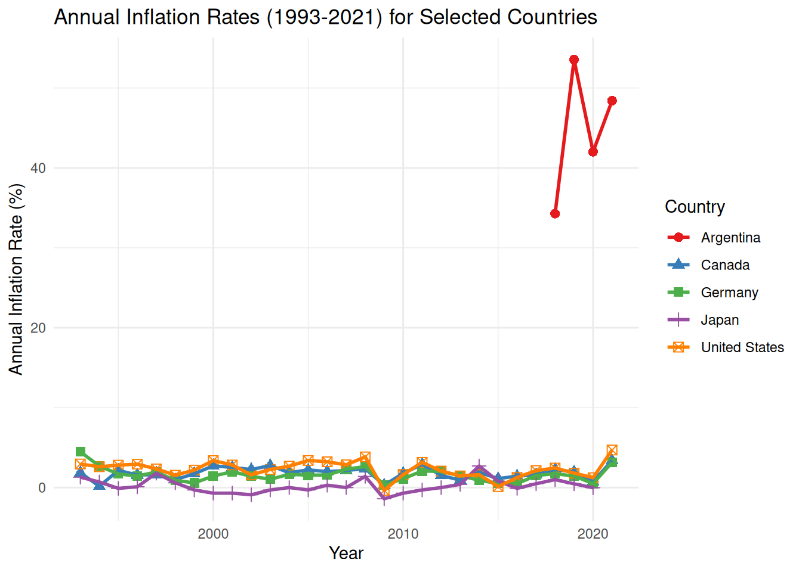
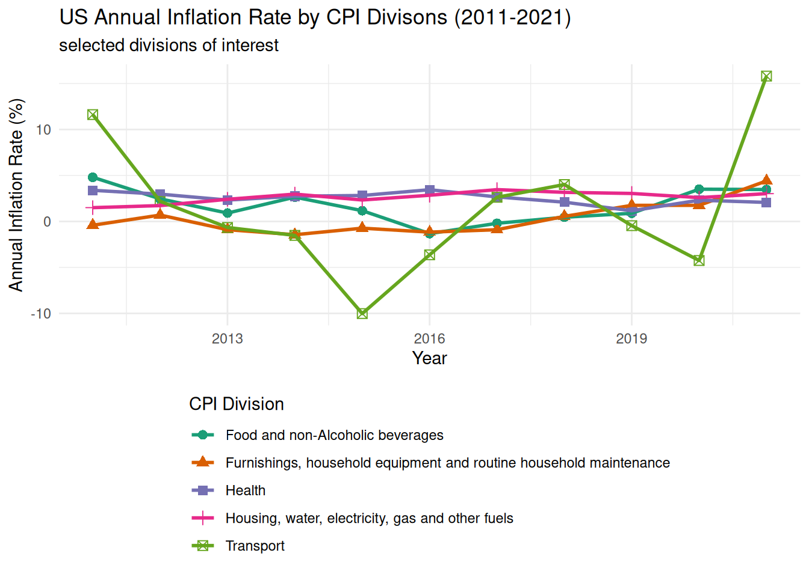

1 + 1[1] 2Quarto enables you to weave together content and executable code into a finished document. To learn more about Quarto see https://quarto.org.
When you click the Render button a document will be generated that includes both content and the output of embedded code. You can embed code like this:
1 + 1[1] 2You can add options to executable code like this
[1] 4The echo: false option disables the printing of code (only output is displayed).
library(tidyverse)── Attaching core tidyverse packages ──────────────────────── tidyverse 2.0.0 ──
✔ dplyr 1.2.0 ✔ readr 2.2.0
✔ forcats 1.0.1 ✔ stringr 1.6.0
✔ ggplot2 4.0.2 ✔ tibble 3.3.1
✔ lubridate 1.9.5 ✔ tidyr 1.3.2
✔ purrr 1.2.1
── Conflicts ────────────────────────────────────────── tidyverse_conflicts() ──
✖ dplyr::filter() masks stats::filter()
✖ dplyr::lag() masks stats::lag()
ℹ Use the conflicted package (<http://conflicted.r-lib.org/>) to force all conflicts to become errorscountry_inflation <- read_csv("data/country-inflation.csv")Rows: 44 Columns: 30
── Column specification ────────────────────────────────────────────────────────
Delimiter: ","
chr (1): country
dbl (29): 1993, 1994, 1995, 1996, 1997, 1998, 1999, 2000, 2001, 2002, 2003, ...
ℹ Use `spec()` to retrieve the full column specification for this data.
ℹ Specify the column types or set `show_col_types = FALSE` to quiet this message.##Part 1
#Question 1: get to know the data
glimpse(country_inflation)Rows: 44
Columns: 30
$ country <chr> "Australia", "Austria", "Belgium", "Canada", "Czech Republic",…
$ `1993` <dbl> 1.753653, 3.631786, 2.754426, 1.865079, 20.813026, 1.257862, 2…
$ `1994` <dbl> 1.9696348, 2.9534065, 2.3775445, 0.1655629, 10.0394242, 1.9920…
$ `1995` <dbl> 4.6277666, 2.2433638, 1.4679612, 2.1487603, 8.9905306, 2.08360…
$ `1996` <dbl> 2.6153846, 1.8609741, 2.0770246, 1.5705311, 8.7587747, 2.12629…
$ `1997` <dbl> 0.2248876, 1.3059833, 1.6281605, 1.6212164, 8.5961567, 2.18216…
$ `1998` <dbl> 0.8601346, 0.9224669, 0.9492503, 0.9959425, 10.6983655, 1.8456…
$ `1999` <dbl> 1.4831294, 0.5689865, 1.1208482, 1.7348430, 2.1354484, 2.49779…
$ `2000` <dbl> 4.4574351, 2.3448684, 2.5445178, 2.7194400, 3.7753883, 2.90327…
$ `2001` <dbl> 4.407135, 2.650000, 2.469258, 2.525120, 4.662676, 2.337875, 2.…
$ `2002` <dbl> 2.981575, 1.810359, 1.645214, 2.258394, 1.902981, 2.424437, 1.…
$ `2003` <dbl> 2.7325960, 1.3555538, 1.5889640, 2.7585632, 0.1187392, 2.07507…
$ `2004` <dbl> 2.3432552, 2.0612068, 2.0972831, 1.8572587, 2.7601078, 1.15435…
$ `2005` <dbl> 2.6918317, 2.2991377, 2.7814326, 2.2135520, 1.8570979, 1.81781…
$ `2006` <dbl> 3.555288, 1.441547, 1.791208, 2.002025, 2.533993, 1.924221, 1.…
$ `2007` <dbl> 2.3276113, 2.1685559, 1.8230563, 2.1383840, 2.8531244, 1.69326…
$ `2008` <dbl> 4.350299, 3.215951, 4.489444, 2.370271, 6.358664, 3.416268, 4.…
$ `2009` <dbl> 1.771117e+00, 5.063094e-01, -5.314567e-02, 2.994668e-01, 1.019…
$ `2010` <dbl> 2.9183400, 1.8135317, 2.1892992, 1.7768715, 1.4727273, 2.31092…
$ `2011` <dbl> 3.303850, 3.286583, 3.532082, 2.912135, 1.917219, 2.758682, 3.…
$ `2012` <dbl> 1.7627802, 2.4856751, 2.8396634, 1.5156782, 3.2876231, 2.39791…
$ `2013` <dbl> 2.44988864, 2.00015749, 1.11309594, 0.93829190, 1.43829787, 0.…
$ `2014` <dbl> 2.48792271, 1.60580560, 0.34000283, 1.90663591, 0.34398859, 0.…
$ `2015` <dbl> 1.50836672, 0.89656529, 0.56142915, 1.12524136, 0.30936455, 0.…
$ `2016` <dbl> 1.276990945, 0.891592367, 1.973852647, 1.428759547, 0.68350420…
$ `2017` <dbl> 1.9486474, 2.0812686, 2.1259709, 1.5968841, 2.4505340, 1.14713…
$ `2018` <dbl> 1.9114009, 1.9983819, 2.0531650, 2.2682257, 2.1494949, 0.81360…
$ `2019` <dbl> 1.6107679, 1.5308955, 1.4368196, 1.9492690, 2.8478760, 0.75813…
$ `2020` <dbl> 0.84690554, 1.38190955, 0.74079181, 0.71699963, 3.16129528, 0.…
$ `2021` <dbl> 2.863910, 2.766667, 2.440249, 3.395193, 3.839845, 1.853045, 2.…Answer: There are 44 rows, each representing annual inflation rates from 1993-2021 in one country. There are 30 columns, each representing inflation rates in a specific year.
inflation <- read_csv("data/country-inflation.csv")Rows: 44 Columns: 30
── Column specification ────────────────────────────────────────────────────────
Delimiter: ","
chr (1): country
dbl (29): 1993, 1994, 1995, 1996, 1997, 1998, 1999, 2000, 2001, 2002, 2003, ...
ℹ Use `spec()` to retrieve the full column specification for this data.
ℹ Specify the column types or set `show_col_types = FALSE` to quiet this message.inflation %>%
distinct(country) %>%
pull(country) [1] "Australia" "Austria"
[3] "Belgium" "Canada"
[5] "Czech Republic" "Denmark"
[7] "Finland" "France"
[9] "Germany" "Greece"
[11] "Hungary" "Iceland"
[13] "Ireland" "Italy"
[15] "Japan" "Korea"
[17] "Luxembourg" "Mexico"
[19] "Netherlands" "New Zealand"
[21] "Norway" "Poland"
[23] "Portugal" "Slovak Republic"
[25] "Spain" "Sweden"
[27] "Switzerland" "Türkiye"
[29] "United Kingdom" "United States"
[31] "Argentina" "Brazil"
[33] "Chile" "China (People's Republic of)"
[35] "Estonia" "India"
[37] "Indonesia" "Israel"
[39] "Russia" "Saudi Arabia"
[41] "Slovenia" "South Africa"
[43] "Colombia" "Costa Rica" #Question 2: Which countries had the top three highest inflation rates in 2021? Your output should be a data frame with two columns, country and 2021, with inflation rates in descending order, and three rows for the top three countries. Briefly comment on how the inflation rates for these countries compare to the inflation rate for United States in that year.
inflation %>%
arrange(desc(`2021`)) %>%
head(3) %>%
select(country, "2021")# A tibble: 3 × 2
country `2021`
<chr> <dbl>
1 Argentina 48.4
2 Türkiye 19.6
3 Brazil 8.30inflation %>%
filter(country == "United States") %>%
select(country, `2021`)# A tibble: 1 × 2
country `2021`
<chr> <dbl>
1 United States 4.70Answer: Argentina (rate = 48.4%), Turkiye (19.6%), and Brazil (8.3%) had overall higher levels of inflation rates compared to the US (4.7%). Argentina was 10.3x the US inflation rate in 2021, where Turkiye was 4.2x and Brazil was 1.8x the US inflation rate.
#Question 3: In a single pipeline, calculate the ratio of the inflation in 2021 and inflation in 1993 for each country and store this information in a new column called inf_ratio, arrange the data frame in decreasing order of inf_ratio, and select the variables country and inf_ratio to display as the result of the pipeline. Do not save this new variable in inf_ratio, only calculate and display it so you can answer the following question based on the output of the pipeline. Which country’s inflation change is the largest over this time period? Did inflation increase of decrease between 1993 and 2021 in this country?
inflation %>%
mutate(inf_ratio = `2021`/`1993`) %>%
arrange(desc(inf_ratio)) %>%
select(country, inf_ratio)# A tibble: 44 × 2
country inf_ratio
<chr> <dbl>
1 New Zealand 3.06
2 Canada 1.82
3 Australia 1.63
4 Ireland 1.60
5 United States 1.59
6 Norway 1.52
7 Denmark 1.47
8 Iceland 1.10
9 Netherlands 1.04
10 Finland 1.00
# ℹ 34 more rowsAnswer: New Zealand had the largest inflation change, where 2021 inflation increased (since the ratio > 1) 3.05x that of 1993.
#Question 4: Reshape (pivot) country_inflation such that each row represents a country/year combination, with columns country, year, and annual_inflation. Then, display the resulting data frame and state how many rows and columns it has.
country_inf_long <- inflation %>%
pivot_longer(cols = -country,
names_to = "year",
values_to = "annual_inflation",
names_transform = as.numeric)Answer: There are 1276 rows and 3 columns.
#Question 5: Use a separate, single pipeline to answer each of the following questions:
country_inf_long %>%
filter(annual_inflation == max(annual_inflation, na.rm = TRUE))# A tibble: 1 × 3
country year annual_inflation
<chr> <dbl> <dbl>
1 Brazil 1994 2076.Answer: The highest annual inflation rate is from Brazil in 1994, with annual inflation of 2075.888.
country_inf_long %>%
filter(annual_inflation == min(annual_inflation, na.rm = TRUE))# A tibble: 1 × 3
country year annual_inflation
<chr> <dbl> <dbl>
1 Ireland 2009 -4.48Answer: The lowest annual inflation rate is from Ireland, 2009, with an inflation rate of -4.478.
country_inf_long %>%
filter(annual_inflation == max(annual_inflation, na.rm = TRUE) |
annual_inflation == min(annual_inflation, na.rm = TRUE))# A tibble: 2 × 3
country year annual_inflation
<chr> <dbl> <dbl>
1 Ireland 2009 -4.48
2 Brazil 1994 2076. #Question 6:
countries_of_interest <- c("Canada", "United States", "Germany", "Japan", "Argentina")Answer: I chose these countries because they represent various developed countries with relatively stable inflation, and included Argentina because of its relatively higher inflation as a comparison of inflation rates over time.
countries_inf_vis <- country_inf_long %>%
filter(country %in% countries_of_interest)
countries_inf_vis %>%
distinct(country)# A tibble: 5 × 1
country
<chr>
1 Canada
2 Germany
3 Japan
4 United States
5 Argentina #Question 7: Using your data frame from the previous question, create a plot of annual inflation vs. year for these countries. Then, in a few sentences, describe the patterns you observe in the plot, particularly focusing on anything you find surprising or not surprising, based on your knowledge (or lack thereof) of these countries economies.
ggplot(countries_inf_vis, aes(x = year, y = annual_inflation, color = country, shape = country)) +
geom_point(size = 2.5) +
geom_line(aes(group = country), size = 1) +
labs(
title = "Annual Inflation Rates (1993-2021) for Selected Countries",
x = "Year",
y = "Annual Inflation Rate (%)",
color = "Country",
shape = "Country"
) +
theme_minimal() +
scale_color_brewer(palette = "Set1")Warning: Using `size` aesthetic for lines was deprecated in ggplot2 3.4.0.
ℹ Please use `linewidth` instead.Warning: Removed 26 rows containing missing values or values outside the scale range
(`geom_point()`).Warning: Removed 26 rows containing missing values or values outside the scale range
(`geom_line()`).
##Part 2
us_inflation <- read_csv("data/us-inflation.csv")Rows: 132 Columns: 4
── Column specification ────────────────────────────────────────────────────────
Delimiter: ","
chr (1): country
dbl (3): cpi_division_id, year, annual_inflation
ℹ Use `spec()` to retrieve the full column specification for this data.
ℹ Specify the column types or set `show_col_types = FALSE` to quiet this message.cpi_divisions <- read_csv("data/cpi-divisions.csv")Rows: 12 Columns: 2
── Column specification ────────────────────────────────────────────────────────
Delimiter: ","
chr (1): description
dbl (1): id
ℹ Use `spec()` to retrieve the full column specification for this data.
ℹ Specify the column types or set `show_col_types = FALSE` to quiet this message.#Question 8: a) How many columns and how many rows does the us_inflation dataset have? What are the variables in it? Add a brief (1-2 sentences) narrative summarizing this information.
us_inflation# A tibble: 132 × 4
country cpi_division_id year annual_inflation
<chr> <dbl> <dbl> <dbl>
1 United States 1 2011 4.80
2 United States 1 2012 2.45
3 United States 1 2013 0.908
4 United States 1 2014 2.64
5 United States 1 2015 1.17
6 United States 1 2016 -1.33
7 United States 1 2017 -0.202
8 United States 1 2018 0.456
9 United States 1 2019 0.885
10 United States 1 2020 3.51
# ℹ 122 more rowsAnswer: There are 4 columns and 132 rows, including the country (which seems redundant in this case, lol), CPI division ID (each CPI is numerically listed), year, and annual inflation rate.
cpi_divisions# A tibble: 12 × 2
id description
<dbl> <chr>
1 1 Food and non-Alcoholic beverages
2 2 Alcoholic beverages, tobacco and narcotics
3 3 Clothing and footwear
4 4 Housing, water, electricity, gas and other fuels
5 5 Furnishings, household equipment and routine household maintenance
6 6 Health
7 7 Transport
8 8 Communication
9 9 Recreation and culture
10 10 Education
11 11 Restaurants and hotels
12 12 Miscellaneous goods and services Answer: There are 2 columns and 12 rows, including the CPI division ID number, and a description of that division.
us_infl_joined <- us_inflation %>%
left_join(cpi_divisions, by = c("cpi_division_id" = "id"))Answer: There are 132 row and 5 columns, named country, cpi_division_id (with the CPI ID #), year, annual_inflation, and description of the cpi division corresponding to the division #.
#Question 9: a) Create a vector called divisions_of_interest which contains the descriptions or IDs of CPI divisions you want to visualize. Your divisions_of_interest should consist of no more than five divisions. If you’re using descriptions, make sure that the spelling of your divisions matches how they appear in the dataset. Then, in 1-2 sentences, state why you chose these divisions.
divisions_of_interest <- c(1, 4, 5, 6, 7)Answer: I chose these divisions because they seem like the ones that represent everyday spending that would be most impacted by inflation, which would help me understand how inflation affects different parts of daily life.
us_infl_divis <- us_infl_joined %>%
filter(cpi_division_id %in% divisions_of_interest)#Question 10:
ggplot(us_infl_divis, aes(x = year, y = annual_inflation, color = description, shape = description)) +
geom_point(size=2.5) +
geom_line(aes(group = description), size = 1) +
labs(title = "US Annual Inflation Rate by CPI Divisons (2011-2021)",
subtitle = "selected divisions of interest",
x = "Year",
y = "Annual Inflation Rate (%)",
color = "CPI Division",
shape = "CPI Division") +
theme_minimal() +
scale_color_brewer(palette = "Dark2") +
theme(legend.position = "bottom",
legend.direction = "vertical" )
Answer: Most divisions are relatively stable over time, but transport shows the greatest fluctuations, which is unsurprising given the US’s politics in oil, and major global oil stock crashes and spikes. Housing and health show a steady increase (again unsurprising), and furnishing is relatively flat. I didn’t think that food would fluctuate more than housing, but I guess this is attributed to supply issues, since the US imports a lot of stuff (I believe).